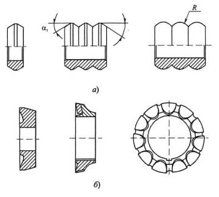
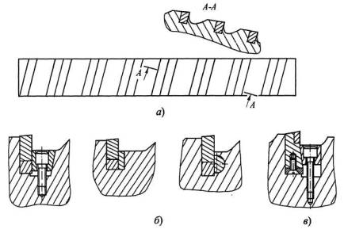

Условия работы зубьев протяжек неблагоприятны для оснащения их твердыми сплавами, так как они снимают тонкие и широкие стружки и работают при низких скоростях резания. Это вызывает колебание силы протягивания и может привести к разрушению твердого сплава. Кроме того, применение твердых сплавов значительно повышает стоимость протяжек и ограничивается сложностью их изготовления. В то же время использование твердых сплавов позволяет в несколько раз повысить стойкость протяжек, особенно при обработке чугунов, высоколегированных сталей и сплавов, а также точность и качество обработанной поверхности.
Твердыми сплавами оснащают в первую очередь наиболее простые по конструкции внутренние протяжки (шпоночные, шлицевые, круглые) и секции (плоские, пазовые, фасонные и др.) наружных протяжек.
В конструкциях внутренних протяжек в последнее время широкое применение нашло использование твердого сплава для выглаживания (пластического деформирования) микронеровностей обработанной поверхности. В этих случаях применяют комбинированные режуще-выглаживающие протяжки, у которых после калибрующих зубьев устанавливают выглаживающие зубья из твердого сплава в виде колец или блоков. Выглаживающие зубья по форме двухсторонние конические с цилиндрическим пояском посередине или сферические (а). Число таких зубьев берется в пределах от 2 до 5 в зависимости от требуемых точности и шероховатости обработанного отверстия. Припуск на диаметр, т.е. общий натяг на зубья, небольшой и равен 0,03...0,20 мм. Он распределяется между зубьями равномерно с уменьшением к концу протяжки. Диаметр последнего выглаживающего зуба принимается равным максимально возможному размеру обработанного отверстия.
При обработке стальных заготовок применение выглаживающих зубьев позволяет достигать точности JT6... JT9 и шероховатости поверхности Rа 0,16...0,63.
Для обработки заготовок типа втулок используют твердосплавные деформирующие протяжки - дорны. Они состоят из рабочих элементов в форме колец, которые крепятся на цилиндрическом стальном стержне. Радиальная поверхность кольца представляет два усеченных конуса с цилиндрическим пояском посередине, подобно выглаживающим кольцам. Число колец от 4 до 10 с большими натягами, достигающими 1 мм на каждое кольцо. Такие протяжки позволяют не только повысить точность отверстий, но и увеличить их диаметр до требуемой величины без снятия стружки. Шероховатость обработанной поверхности при этом достигает Ra 0,16...0,08.
Твердые сплавы в качестве режущих элементов с целью повышения производительности и стойкости при обработке чугунов и труднообрабатываемых сталей используются у внутренних протяжек в виде цельных колец или с напайными пластинами. Кольца устанавливаются на стальной державке протяжки и закрепляются гайками. При этом сменные кольца смещают относительно друг друга путем поворота вокруг оси таким образом, чтобы промежутки между пластинами играли роль стружкоделительных канавок.
Условия работы твердосплавных режущих элементов у протяжек для обработки наружных поверхностей по сравнению с внутренними протяжками более благоприятны как с точки зрения степени деформирования срезаемого слоя, так и свободного удаления стружки из зоны резания. В конструкциях сборных протяжек можно применять распределение припуска по секциям с учетом более высокой надежности работы твердосплавных режущих зубьев и благоприятных условий их переточки и замены при выкрашивании режущих кромок.
В зависимости от способа соединения режущей твердосплавной части с корпусом различают два вида: разъемное и неразъемное.
Неразъемное соединение корпуса с пластинами твердого сплава осуществляется посредством пайки. Его достоинством является простота конструкции. Недостатки: невозможность замены пластинок при выкрашивании и поломке; ухудшение условий заполнения впадины зуба стружкой после переточек; наличие остаточных напряжений в пластинах при пайке.
Устранение этих недостатков достигается путем осуществления разъемного соединения пластин твердого сплава с корпусом, т.е. механическим креплением пластин с помощью винтов, штифтов, клиньев и т.п. Из множества вариантов такого крепления твердосплавных пластин с корпусом протяжки можно отметить как наиболее удачные крепления клиньями или штифтами с лысками (рис. 12, б), обеспечивающие хорошие условия для размещения стружки в канавке, возможность регулирования по высоте зубьев с помощью подкладок и надежное крепление пластин. При этом исключаются внутренние напряжения в пластинах, характерные для напайных пластин.
При этом из-за необходимости размещения элементов крепления несколько увеличиваются размеры протяжки.